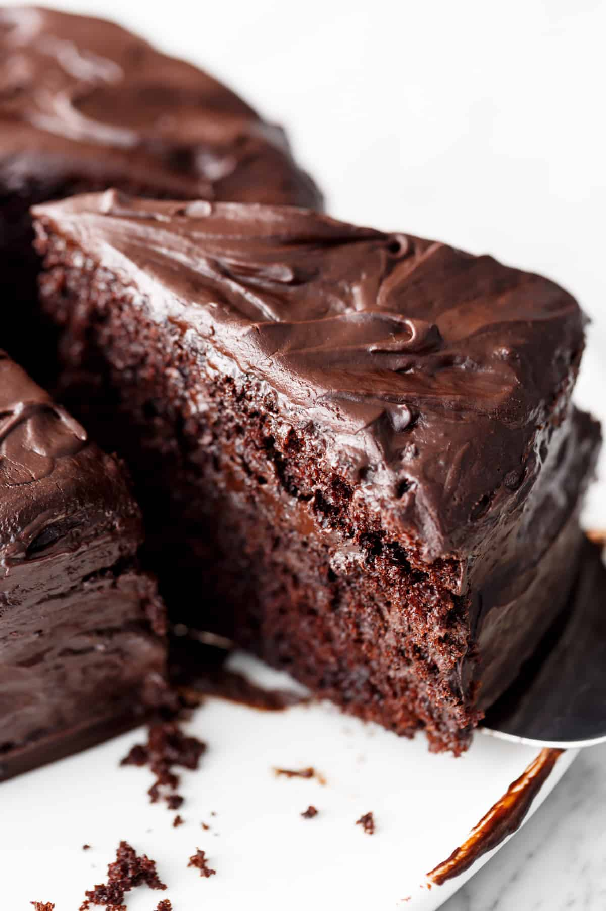

Chocolate flavour oozes all through this cake even though it’s only made with cocoa powder, like our very own Fudgy Chocolate Cake. With a crumb so incredibly tender, this cake stays moist for a good 4-5 days. Whether you eat it plain, dust it with powdered sugar or serve with dollops of cream or scoops of ice cream, it truly is perfectly perfect!
What makes an exceptional Chocolate Cake? You only need one bowl and minimal ingredients to make this Hershey’s Perfectly Chocolate Cake. Rich in chocolate flavour with a tender-moist crumb, and fluffy with the perfect amount of sweetness. This is what chocolate dreams are made of!


The best chocolate cake recipe
Chocolate flavour oozes all through this cake even though it’s only made with cocoa powder, like our very own Fudgy Chocolate Cake. With a crumb so incredibly tender, this cake stays moist for a good 4-5 days. Whether you eat it plain, dust it with powdered sugar or serve with dollops of cream or scoops of ice cream, it truly is perfectly perfect!